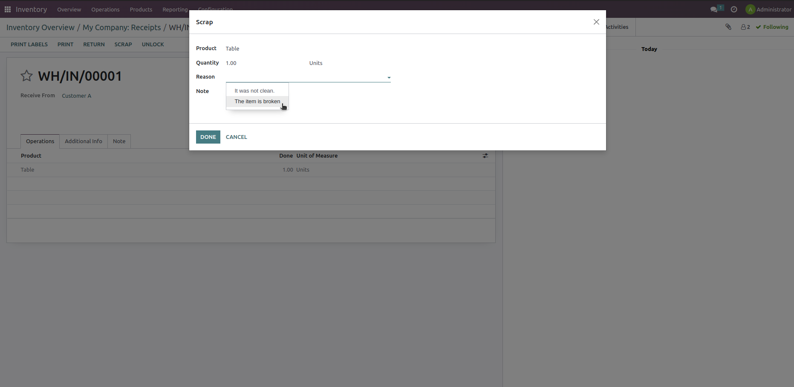
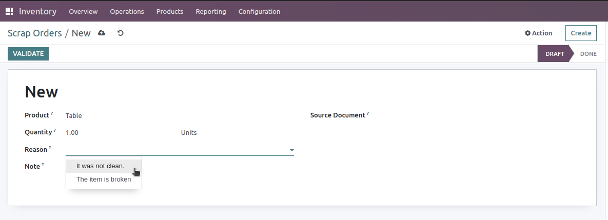
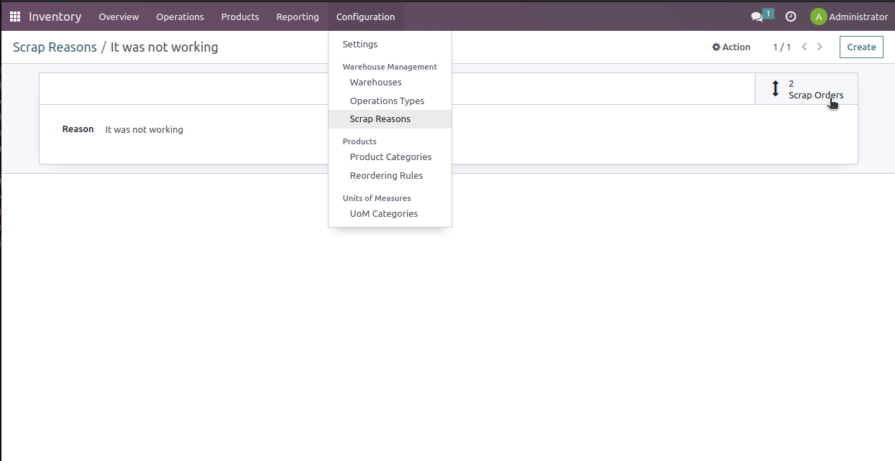

Add a Reason on Scrap
This module was written to give the user the possibility to add a reason for the scrap order.
Features:
- creating reasons as many as possible,
- possibility to prioritize some reasons by ranking them in the list view
- possibility to select a reason from the list reasons
- possibility to add a note on the scrap
- adding the reason and note on both the wizard (through the Scrap button on the move) as well as on the scrap order from the operations.
Configuration:
To configure the Scrap Reasons, you need to have "Inventory Manager" access right.
- Go to Inventory / Configuration / Warehouse Management / Scrap Reasons.
- Easily add a new Scrap Reason.
- On the list view, with the help of the handle , you can order the reasons
How to Use:
To use this module, you need to first configure the reasons as described above, then:
- On a validated move to an internal location, where the button Scrap is available, click on the Scrap button.
- On the Wizard, you are able to select a Reason or add a note
 - From Inventory / Operations / Scrap, create or select a scrap order, then select a Reason or add
a note
 - With the smart button on the Scrap Reason form, you can go to the list of "done" scrap
orders with the corresponding reason:

Notes:
- Only inventory managers can create and edit the reasons from the Configuration.
- The option "Create" as well as "Create and Edit" are disabled on the views.
- The reason and note will be read-only when the Scrap is "done", but just in the view so as to be able to import/update the data.
Feedback & Issues
In case of feedback or any possible issues, this can be reported through submitting this form or via an email to apps@bitigloo.com.
Credits
Authors
- bitigloo GmbH <https://github.com/bitigloo>
Maintainers
This module is maintained by bitigloo GmbH. Check out our products and services.
bitigloo GmbH is a certified Odoo partner in Germany which enjoys the expertise of a team of proficient Odoo experts with years of experience in finding the best ERP solutions for various businesses, tailoring them to their specific needs, and implementing them in the most effective way.
License
This module is under the license "GPL-3 or any later version" → Link